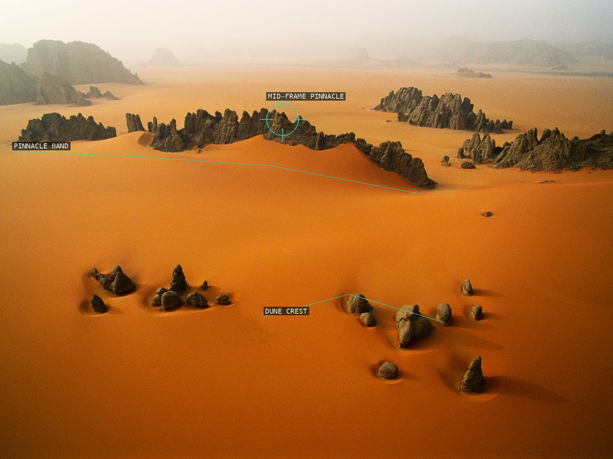
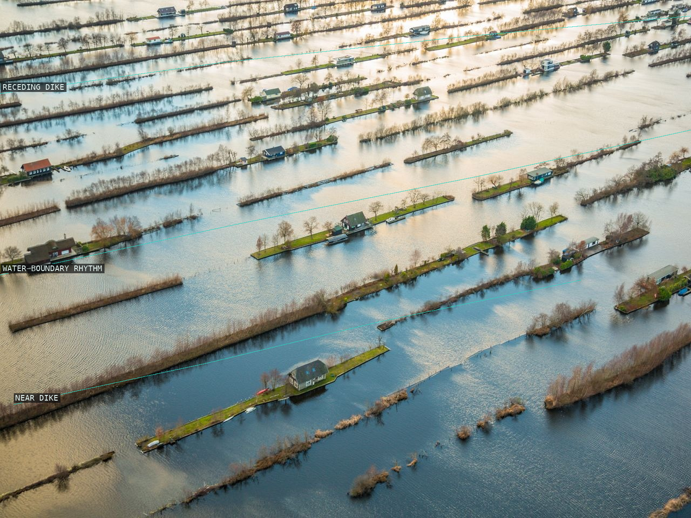
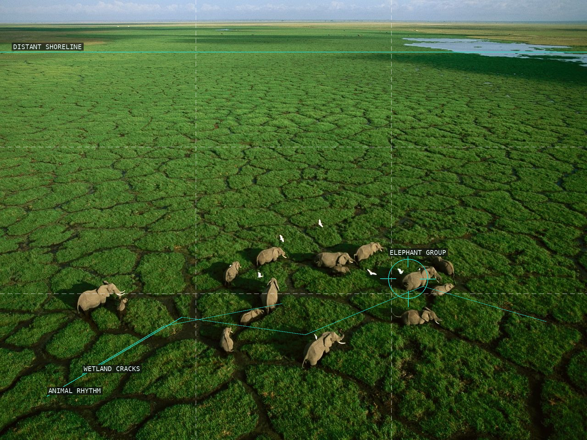
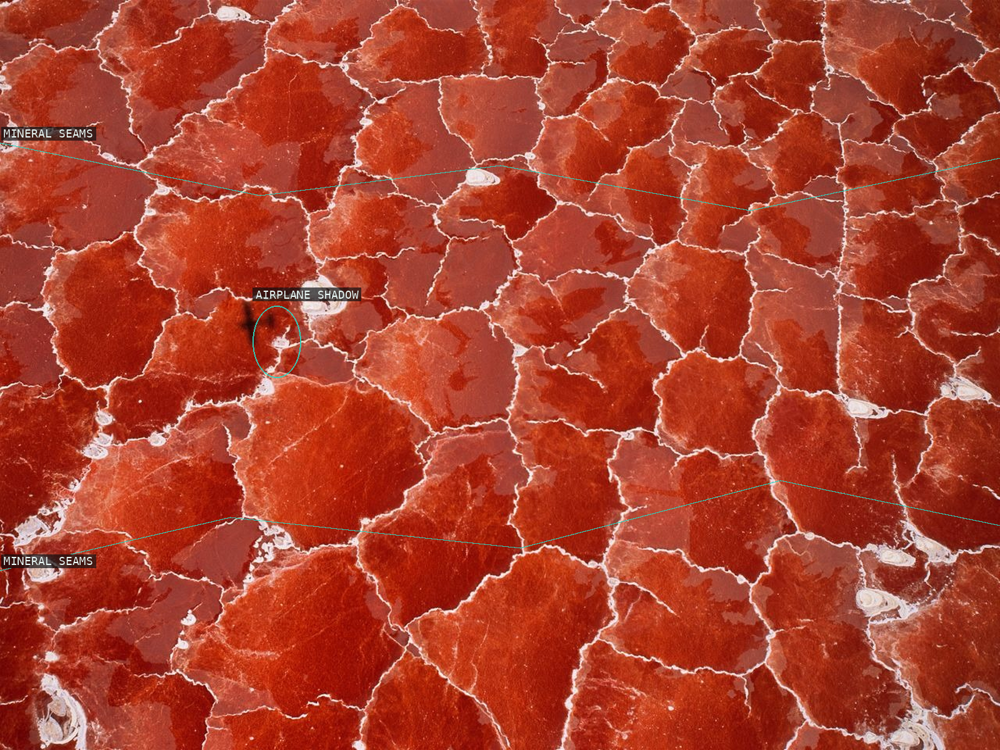
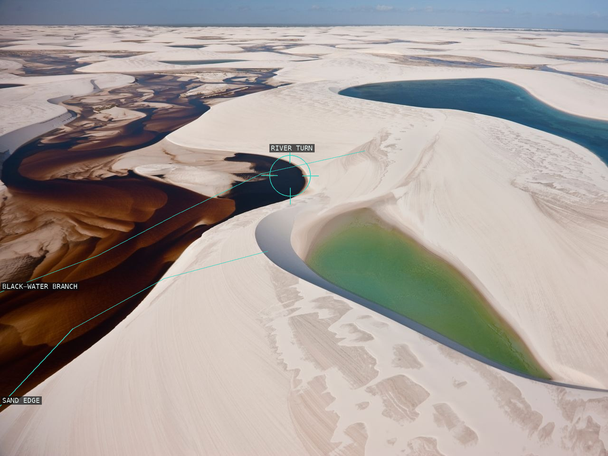
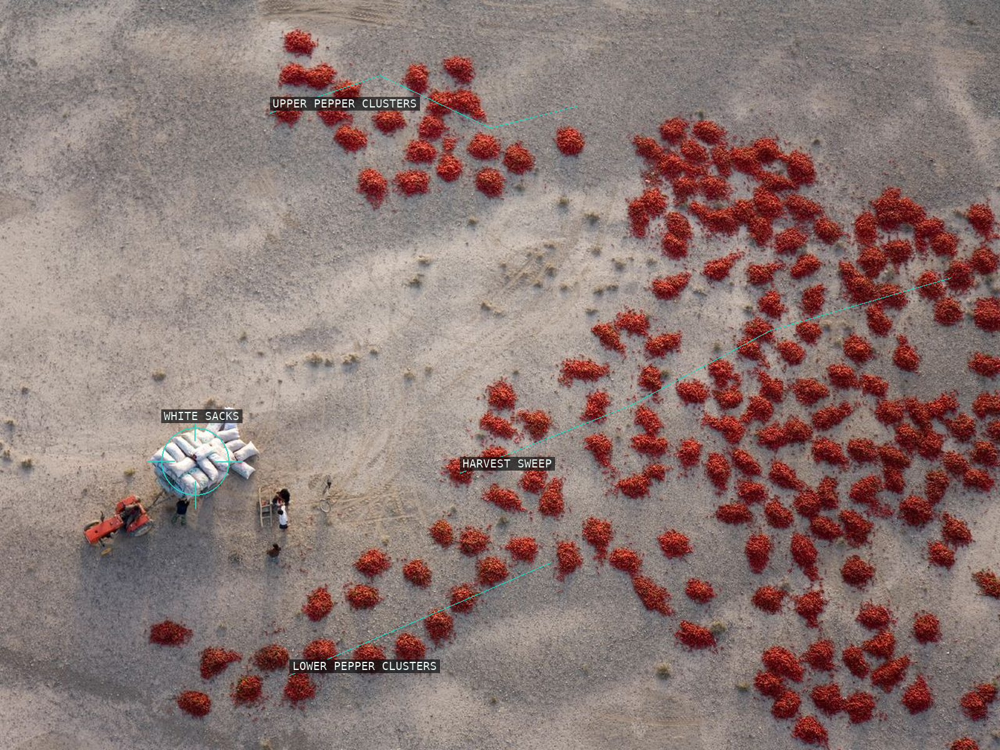
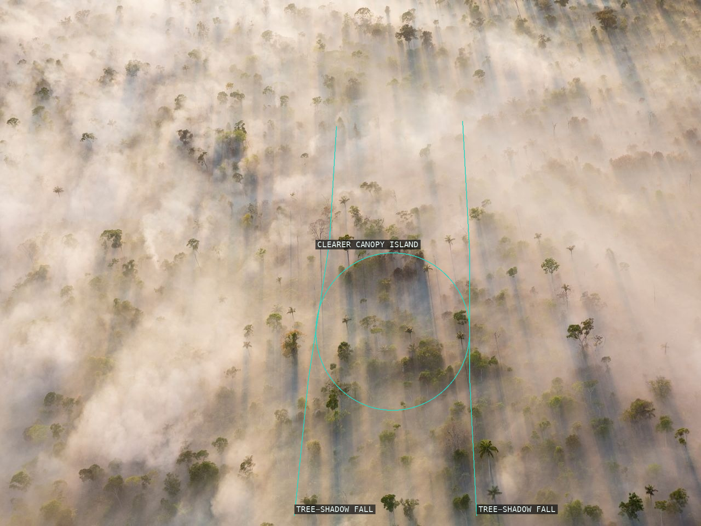
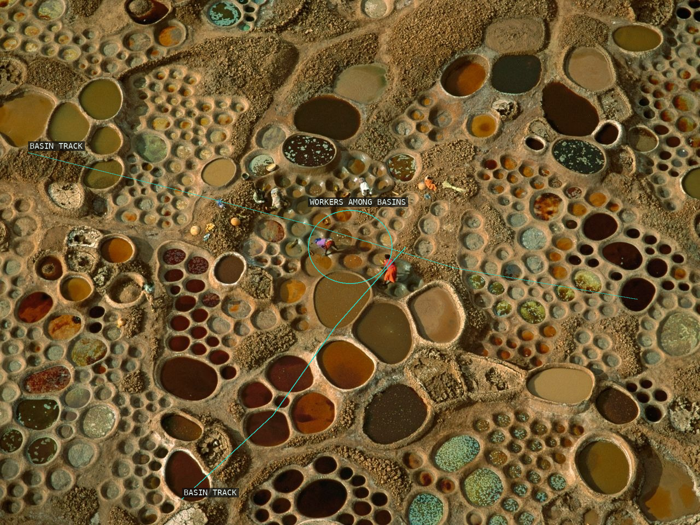
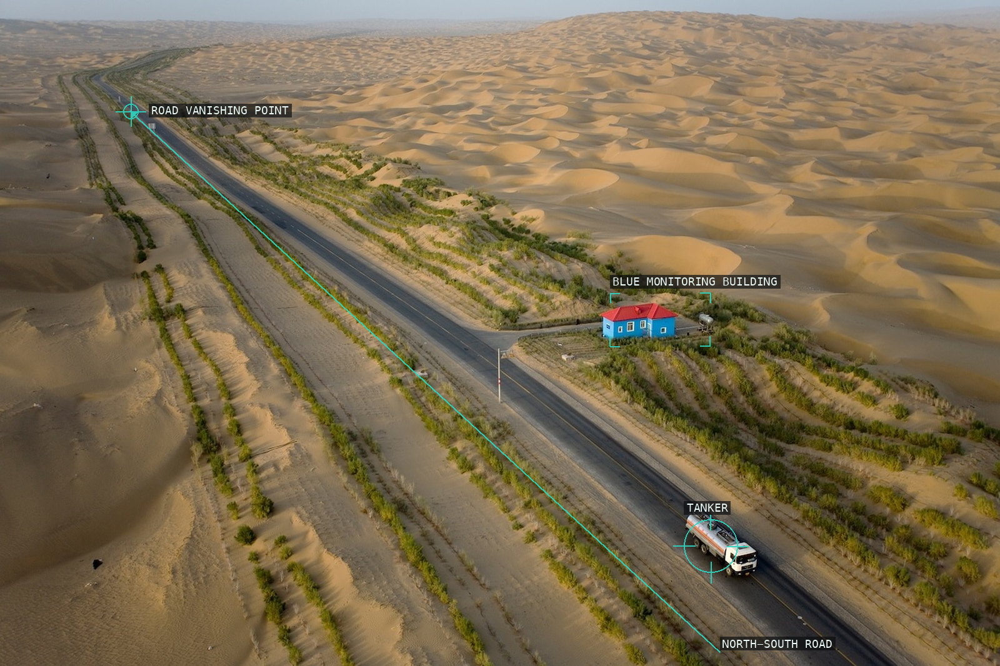
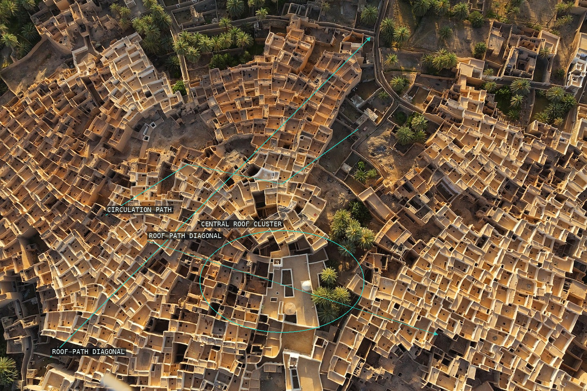

/* george-steinmetz — proofs */
10 plates. Deterministic overlays rendered by the composition-analysis skill.

01-karnasai-pinnacles
Rock bands and a dune crest build depth in a broad orange field.

02-wijdemeren-peat-bog
Repeated inhabited dikes organize water and land into a receding rhythm.

03-amboseli-elephants
A herd interrupts the scale of a green wetland field.

04-lake-natron-airplane-shadow
An aircraft shadow interrupts cellular mineral seams.

05-rio-negro-branch
Dark and green water curves organize pale sand.

06-baicheng-red-peppers
Pepper clusters and a compact work group establish scale.

07-amazon-conversion-smoke
Long tree shadows remain visible through the smoke veil.

08-teguidda-salt-works
Workers and tracks articulate an all-over basin field.

09-taklimakan-oil-road
Road, building, and tanker establish engineered scale in dunes.

10-ghadames-rooftops
Roof paths organize a dense settlement tessellation.